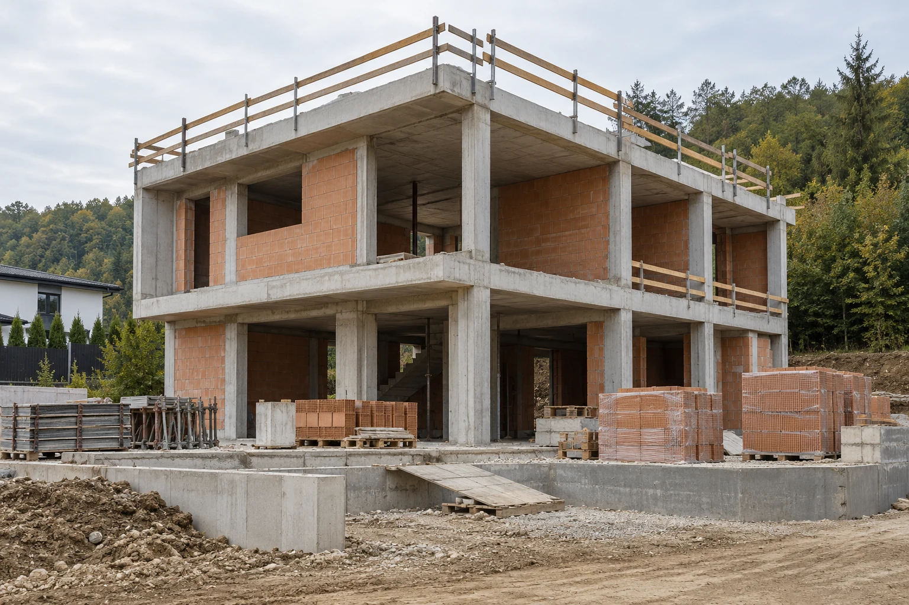
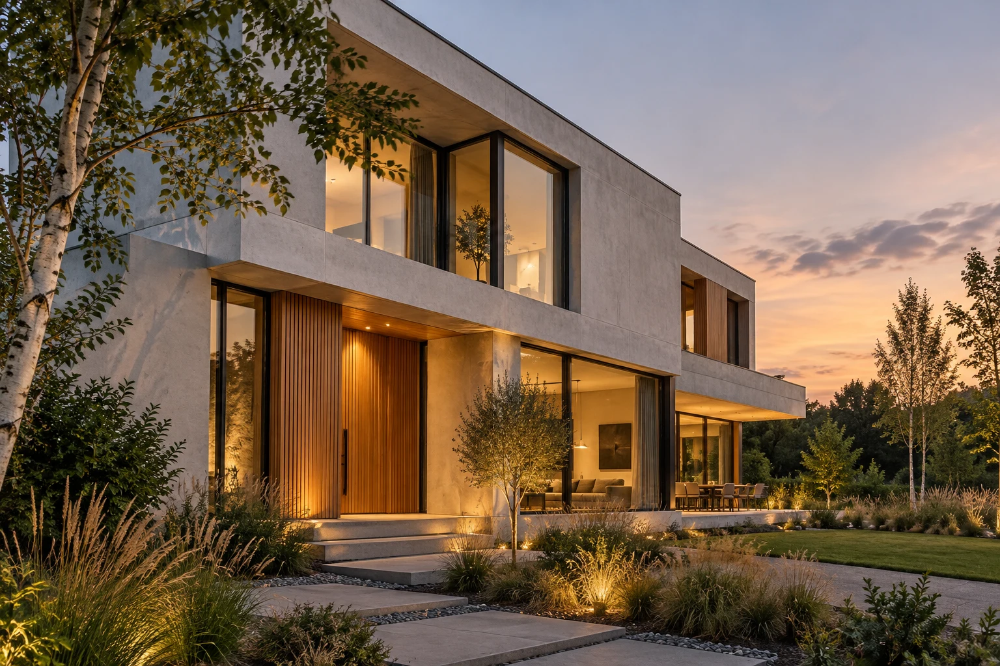
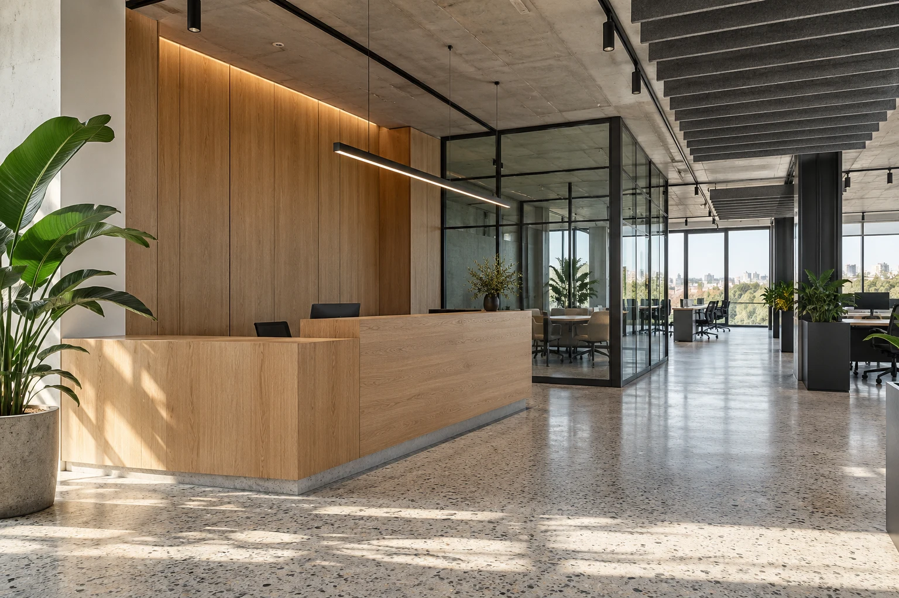
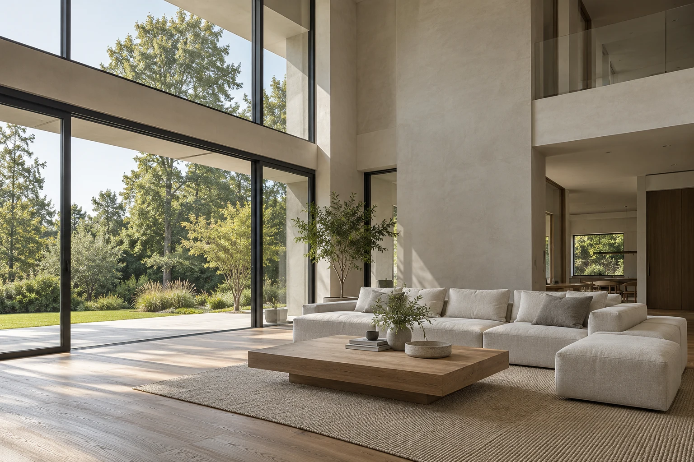

Locul
Localitatea, terenul sau spațiul și câteva fotografii ale situației existente.
Fiecare proiect are alt punct de plecare. Alegem împreună lucrările potrivite și stabilim clar ce preluăm, cum le organizăm și ce informații ne trebuie pentru o ofertă.
Explorează proiectele

Locuințe individuale și extinderi
O casă începe cu un proiect clar și o bună înțelegere a terenului. Organizăm lucrările în etape și urmărim legătura dintre structură, instalații și finisaje, pentru ca deciziile din șantier să susțină rezultatul dorit.
Pornim de la documentația disponibilă, particularitățile terenului și stadiul în care se află proiectul.

Birouri, spații de servicii și activități comerciale
Un spațiu de lucru trebuie să susțină activitatea de zi cu zi. Discutăm despre utilizare, circulații și cerințele din proiect, apoi organizăm execuția și intervențiile specialiștilor implicați.
Clarificăm funcțiunea spațiului, lucrările necesare și condițiile în care se poate desfășura șantierul.

Intervenții în clădiri și spații existente
Înainte să schimbăm un spațiu, înțelegem ce merită păstrat și ce trebuie refăcut. Stabilim intervențiile și ordinea lor, cu atenție la starea clădirii și la relația dintre lucrările noi și cele existente.
Fotografiile, planurile existente și o discuție la fața locului ne ajută să delimităm corect intervenția.
Continuitate între proiectare, execuție și predare
Un proiect avansează atunci când responsabilitățile sunt clare. Punem în legătură etapele, echipele și informațiile, astfel încât beneficiarul să înțeleagă progresul și deciziile care urmează.
Stabilim de la început rolul nostru, echipa implicată și modul în care sunt discutate și aprobate modificările.
Lucrările și responsabilitățile incluse se stabilesc prin ofertă și contract, pe baza proiectului și a condițiilor din teren.
Nu ai nevoie de toate răspunsurile pentru a ne scrie. Cu câteva repere, putem înțelege proiectul și ce mai trebuie clarificat înainte de ofertare.
Trimite detaliile proiectuluiDupă prima discuție, clarificăm informațiile lipsă și pașii necesari pentru pregătirea unei oferte.
Localitatea, terenul sau spațiul și câteva fotografii ale situației existente.
Planurile, proiectul și documentele pe care le ai deja la dispoziție.
Tipul lucrării, suprafața orientativă și rezultatul pe care îl urmărești.
Bugetul estimat și perioada în care ai vrea să se desfășoare lucrările.
Ai o întrebare despre proiectul tău? Spune-ne ce construiești și revenim cu un răspuns clar.
Pune o întrebareCu o discuție despre teren sau spațiu, obiective și buget. Pe baza informațiilor disponibile, stabilim ce documentație este necesară pentru o ofertă.
Da. Costul se estimează pe baza documentației, a suprafeței, a finisajelor și a condițiilor din teren. O ofertă detaliată se pregătește după clarificarea cerințelor.
Colaborarea cu proiectanții și specialiștii implicați se stabilește de la început, cu responsabilități clare pentru fiecare etapă.